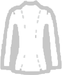

Odzież
Medycyna
Motoryzacja
Obuwie
Meble
SANWIL specjalizuje się w produkcji materiałów skóropodobnych i tkanin technicznych powlekanych roztworami PU, bezftalanowymi plastizol.
Produkujemy również dzianiny techniczne i futerkowe oraz wielowarstwowe wyroby laminowane.
Nasze wyroby trafiają do odbiorców w całej EUROPIE.
Produkujemy dla branż meblarskiej, obuwniczej, motoryzacyjnej, medycznej, odzieżowej i wielu innych.
Mamy wdrożony System Zapewnienia Jakości ISO 9001:2009.
Nasze wyroby charakteryzuje wysoka jakość potwierdzona atestami i certyfikatami, różnorodność asortymentów oraz szerokie wzornictwo i kolorystyka.
SANWIL jest obecny na rynku od 1974 roku, a ostatnie 20 lat to okres największych i najszybszych przemian.
Aktualnie jesteśmy jedyną w Polsce i jedną z nielicznych w Europie firm o tak rozbudowanym i nowoczesnym parku maszynowym oraz zapleczu technologicznym. Pozwala to nam konkurować z najlepszymi producentami materiałów powlekanych na świecie.
Od początku swojego istnienia specjalizujemy się w produkcji materiałów skóropodobnych powlekanych PU i PCW oraz dzianin technicznych, które aktualnie są rozszerzone o dyspersje wodne, dzianiny futerkowe oraz materiały laminowane wielowarstwowe.
SANWIL zawsze przywiązywał szczególną uwagę i dbałość, aby wytwarzać ekologiczne produkty i zabezpieczyć środowisko naturalne.
Nasza produkcja jest kompleksowo wyposażona we wszystkie potrzebne urządzenia do zabezpieczenia środowiska naturalnego i pracowników na stanowiskach pracy.
Posiadamy POZWOLENIE ZINTEGROWANE wydane przez Prezydenta Miasta.
Wszystkie nasze produkty są zgodne z wymaganiami REACH.
Od roku 2015 nie używamy w ogóle do naszej produkcji plastyfikatorów ftalanowych.

Zintegrowane w jednym miejscu możliwości produkcji:
Uzupełnione szerokim zapleczem laboratoryjnym oraz doświadczona i wyspecjalizowaną kadrą pracowników pozwala nam w pełni kontrolować wieloetapowy proces wytwarzania produktu finalnego zarówno pod względem jakości jak i terminowości realizacji.
Materiały obuwnicze SANWIL posiadają oryginalne i modne wzornictwo, oraz charakteryzują się odpowiednimi parametrami dla dedykowanego przeznaczenia. Są oferowane w bogatej gamie kolorów i wykończeń.
Różnorodność oferowanych asortymentów sprawia, że każdy klient dobierze odpowiedni materiał na produkowany przez siebie typ obuwia. Podstawowe to:


Produkujemy wiele materiałów przeznaczonych na odzież ochronną
Różnorodność oferowanych asortymentów sprawia, że każdy klient dobierze odpowiedni materiał na produkowany przez siebie typ obuwia. Podstawowe to:

W swojej ofercie posiadamy szereg materiałów przeznaczonych do wnętrza pojazdów. Podstawowe to:
Materiały powyższe są zgodne z wymaganiami Dyrektywy 98/25/WE Parlamentu Europejskiego


Posiadane know-how zaowocowało wdrożeniem we współpracy z naszymi klientami nowej jakości winyli odpornych na olejki, kremy, pot i inne płyny ustrojowe. Materiały:
Dostępne ze stoku: SANWIA ® M754
Skóropodobne materiały powlekane PU i PCW produkowane dla sektora tapicerki domowej charakteryzują się:
Dostępne ze stoku : MEDITAP B365, B313 SKADEN ® B353, B55